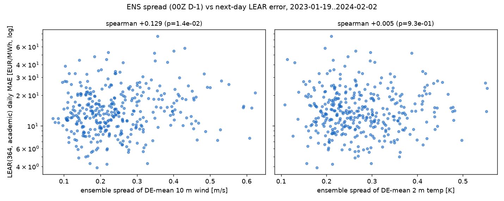

Setup. Daily MAE of LEAR(364, academic exog) — the current
point-forecast floor, run lear-de-20260811-074202 — joined with
ensemble-spread metrics from the ECMWF ENS 00Z run of D−1 (leakage-safe:
published hours before the auction gate). Spread metric per delivery day:
std across the 51 members of the Germany-mean 10 m wind speed / 2 m
temperature, averaged over the day's 3-hourly valid times.
Overlap: 2023-01-19..2024-02-02, n=360 days (the era where only
10 m wind and 2 m temperature exist in the open-data archive).
Pre-registered prediction (2026-08-11, before computation): positive but modest rank correlation, Spearman ≈ 0.2–0.4, wind spread a better predictor than temperature spread.

| predictor (daily) | Pearson | p | Spearman | p |
|---|---|---|---|---|
| 10 m wind spread | +0.144 | 6.2e-03 | +0.129 | 1.4e-02 |
| 2 m temp spread | −0.010 | 0.85 | +0.005 | 0.93 |
| 10 m wind mean (control) | +0.180 | 6.1e-04 | +0.166 | 1.6e-03 |
| wind spread | wind mean (partial, rank) | −0.006 (p=0.92) | |||
| wind-spread quartile | mean MAE | median MAE | days |
|---|---|---|---|
| Q1 (calmest ensemble) | 15.03 | 12.38 | 90 |
| Q2 | 14.27 | 12.42 | 90 |
| Q3 | 14.99 | 13.49 | 90 |
| Q4 (most uncertain) | 18.75 | 15.60 | 90 |
Registered follow-up: rerun with 100 m wind spread + ssrd spread on the post-March-2024 span once the full backfill lands, before concluding anything for the distributional phase. Prediction to beat: partial Spearman (hub-height spread | wind mean) > +0.15 on 2024-03..2026-07.
Inputs: _scratch/spread_daily.py (archive
reduction), _scratch/spread_vs_error.py (analysis). Daily joined
table: daily.csv; quartiles:
mae_by_spread_quartile.csv.